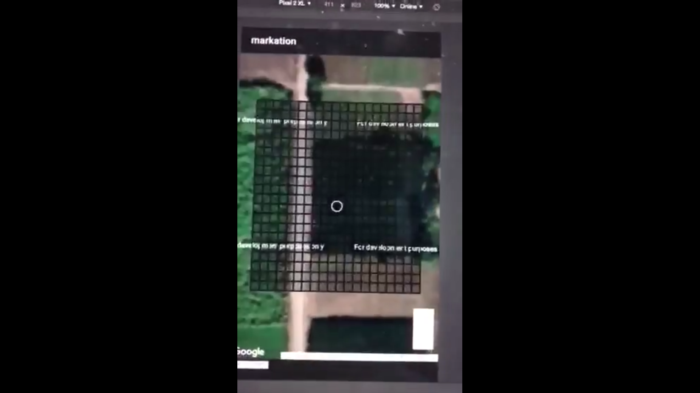

AGRI Measure App
Drone Imagery processing of Site Using WebODM

Team Members:
Muhammad Hamza
Tech Stack:
Python
Affiliation:
Fiverr
Blue Print:
Using Python and GDAL 1*1M Vector Grid Index feature was overlayed upon basemap.
Team Members:
Muhammad Hamza
Tech Stack:
Python
Affiliation:
Fiverr
Blue Print:
Blue Print
Project Description:
The Agri Measure App was developed as part of a government project aimed at precise crop boundary measurement for agricultural survey field teams. Initially, the client's IT team utilized Fixed scale .svg, leading to backend complications. Recognizing the issue, a solution was proposed involving Grid Index Features, offering a more efficient approach.
Given a two-month timeline, the project was independently managed, focusing on dividing the Area of Interest into manageable blocks and generating 1x1 Meter Grid Index Features.
Technological Implementation:
Utilizing base Imagery hosted via AGOL and employing Python alongside GDAL, a 1x1 Meter Vector Grid Index was overlaid on a basemap. Arcpy commands were leveraged to enhance functionality. The resulting TBs of Vector Data were hosted on ArcGIS Online as a feature service, ensuring rapid loading times for frontend accessibility.
Functionalities and Impact:
The final Agri Measure App surpassed mere area calculations, offering precise measurements for area, circumference, and line length. Its user-friendly interface revolutionized user experience, allowing grid selections akin to interactive gaming, significantly enhancing usability and engagement.
Contribution:
This project was a commissioned effort showcasing independent expertise and problem-solving capabilities.
Conclusion:
This project exemplifies innovative problem-solving and technological integration, offering a robust solution for accurate crop boundary measurement. Its impact on simplifying fieldwork for agricultural survey teams highlights its effectiveness and usability.
Acknowledgment:
The successful completion and positive reception of this project resulted in additional recognition through gratuities, emphasizing its value and contribution to the domain.
Interactive Map and Gridded Repository
Please feel free to contact me at my email address or through my LinkedIn Account below.
mhwahla360@gmail.com